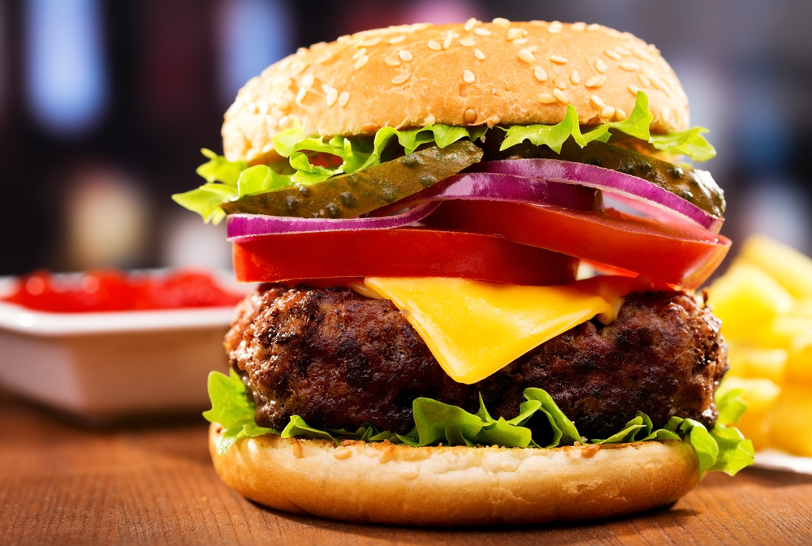

Shake Shack Бургер

- Время: 30 минут
- Количество порций: 4 порции
- Калорийность: 552 ккал
Ингредиенты
- Соус (майонез домашний) — ½ стакана
- Соус (кетчуп и горчица по вкусу) — 1 ст.
- Огурец (маринованные) — 4 шт.
- Специи (чесночный порошок) — ¼ ч. л.
- Специи (паприка) — ¼ ч. л.
- Перец (кайенский) — щепотка
- Говядина (говяжий фарш (филе)) — 230 г
- Говядина (говяжий фарш (шейка)) — 120 г
- Говядина (говяжий фарш (грудинка) — 120 г
- Масло (подсолнечное) — 2 ч. л.
- Хлеб (булочки для бургера) — 4 шт.
- Салат (зелёный) — 4 листа
- Помидоры — 8 кусочков
- Масло (растительное) — ½ ч. л.
- Сыр (американский) — 4 кусочка
- Соль — по вкусу
- Перец — по вкусу
Процесс приготовления
- Сделайте соус. Смешайте майонез, кетчуп, горчицу, чесночный порошок, паприку, кайенский перец в блендере. Соуса получится много, так что переложите его в соусницу или контейнер.
- Смешайте фарш, после чего разделите его на четыре части и поставьте в холодильник на 10 минут.
- Пока котлеты охлаждаются, сделайте булочки. Разрежьте пополам каждую и смажьте маслом. Подрумяньте на сковороде.
- Возьмите глубокую сковороду, разогрейте её и налейте масло. Щедро посыпьте котлету солью и перцем, затем положите в сковороду. Используйте плоскую лопатку, чтобы сделать котлету более плоской. Готовьте около двух минут, пока не появится золотистая корочка. Положите на мясо по ломтику сыра и дождитесь, пока он не расплавится. После уберите котлеты с огня.
- Можно собирать бургер! На нижнюю булочку положите котлетус сыром, два кусочка помидора, огурцы и лист салата. Смажьте верхнюю булочку соусом и накройте ею бургер.